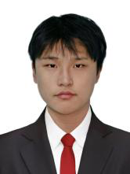

Data · AI · Growth
林扬洋
物理学硕士生｜数据分析｜AI 智能体｜用户增长
具备科研数据处理、统计建模与可视化经验，熟悉 Python、SQL、Power BI 等工具；同时拥有 AI 智能体本地部署与多平台接入能力，并参与过用户增长体系搭建。
3.7硕士阶段 GPA / 4.0
108 万+TESS 光变曲线数据规模
6 类数据、BI 与 AI 技能方向

现居上海 · 硕士在读